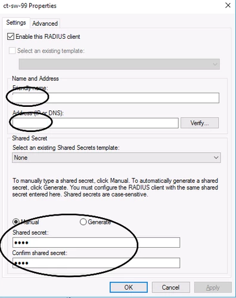
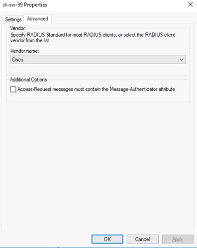

General
AAA
RADIUS
You cannot use LDAP on a Cisco switch (at least not this one):
SW(config)#aaa authentication login default group ?
WORD Server-group name
radius Use list of all Radius hosts.
tacacs+ Use list of all Tacacs+ hosts.
The below adds the radius-server to the switch with the secret key “test” and enables authentication via radius, then local
# enable aaa
aaa new-model
# configure the radius server on the switch
radius-server host x.x.x.x auth-port 1812 acct-port 1813 key test
# enable radius authentication for the switch
aaa authentication login default group radius local
# enable an enable password to become privileged
enable password mypasswordhere
# enable vendor specific attributes (optional for basic config, but necessary for advanced features - ISE)
radius-server vsa send authentication
radius-server vsa send accounting
# maintain and build an IP tracking table to track hosts that connect to network (ISE)
ip device tracking
# to test authentication
SW#test aaa group radius caleb.test Password1 new-code
User successfully authenticated
Via NPS:
Add the client to NPS
 Health
CPU:
Sh proc cpu sorted | ex 0.00
Factory Default Settings
Hold down the mode button
Plug in console cable
Commands:
switch: flash_init
switch: dir flash:
switch: del flash:config.text
del flash:vlan.dat
boot
IOS Upgrade
Setup a TFTP server
Commands:
# Backup config
copy run start
# Backup config to server
copy startup-config tftp:
# Copy the .bin file downloaded to flash
copy tftp flash:
# Verify the .bin file
verify flash:xxxx.bin
# Specify to boot off of the new .bin file
boot system flash:xxxxxxx.bin
reload
Isolating Guest Network
The below configuration is applied on the Core Switch(es) in to block the guest network (VLAN100) from accessing the rest of the networks.
ip access-list extended VLAN100
permit udp any eq bootpc host 10.10.10.10 eq bootps
permit udp any eq bootpc host 10.10.10.11 eq bootps
permit udp any any eq domain
permit tcp any host 10.10.10.12 eq 8880
deny ip any 10.0.0.0 0.255.255.255
deny ip any 172.16.0.0 0.15.255.255
deny ip any 192.168.0.0 0.0.255.255
deny ip any 169.254.0.0 0.0.255.255
permit ip any any
interface Vlan100
ip access-group VLAN100 in